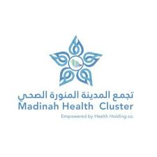

مستشفى ينبع العام
Yanbu General Hospital
دليل الرعاية الروحية للمريض المسلم
Spiritual Care Guide · Select your language
‹
A−
A+
◑
أحكام صلاة المريض وطهارته
الشيخ عبدالعزيز بن عبدالله بن باز رحمه الله
‹
A−
A+